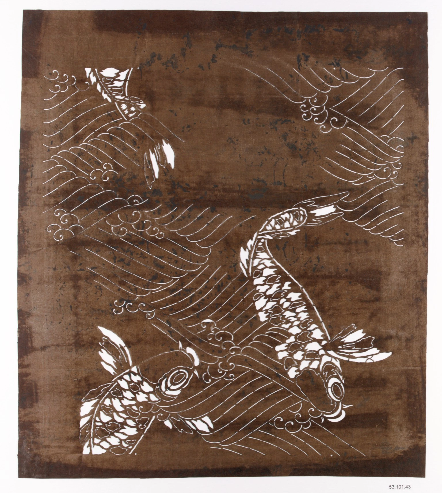
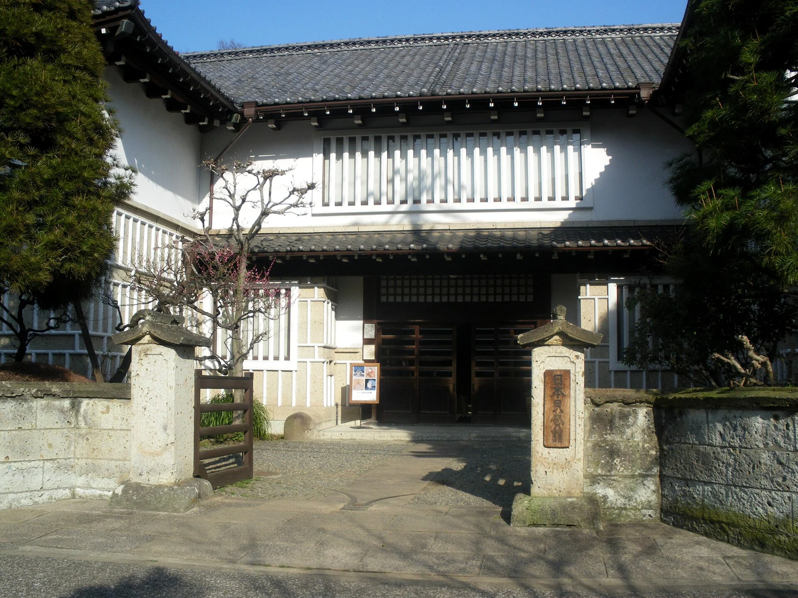

아직 펼치지 않은 카드우리 옷을 입은 성경 이야기 · 2와타나베 사다오의 성경 판화염색 가게에서 일하던 소년이 자라서, 평생 성경 이야기만 찍는 판화가가 되었어요. 그는 어떤 기법을 썼을까요?옷감 물들이는 방법으로 성경 그림을 찍은 화가가 있대.
1940~1990년대일본 도쿄 · 집 작업실
와타나베 사다오의 성경 판화
도쿄의 염색 가게에서 옷감 물들이는 일을 배운 소년이, 자라서 성경 이야기만 찍는 판화가가 되었어요. 그는 옷감에 쓰던 종이 본과 쌀풀로 종이에 판화를 찍었어요. 1977년 미국의 한 미술 교수가 적어 둔 그의 차례대로, 판화 한 장을 찍어 보세요.
옛날 일본에 옷감을 물들이던 소년이 있었대. 어른이 되어서는 종이 본이랑 쌀풀로 성경 그림을 찍었어. 우리도 차례대로 찍어 볼까?
검수 전 시안이에요(기준서 1판). 와타나베의 판화는 저작권이 남아 있어 싣지 않았어요. 작업대 무대와 끝에 드러나는 물고기 무늬는 그의 판화가 아니라, 1977년 기록의 차례를 보여 주려고 이 안내서가 그린 그림이에요. 상상은 ‘눈 감고 상상해 보기’에만 썼어요.
시안 확인용카드 단계 미리 보기
1
염색 가게의 소년
와타나베 사다오(渡辺禎雄)는 1913년 도쿄에서 태어났어요. 열 살에 아버지를 여의고 학교를 일찍 그만둔 뒤, 염색 가게에 들어가 일을 배웠어요.
열일곱 살이던 1930년, 이웃에 사는 한 그리스도인 여성이 그를 교회로 이끌었어요. 그해 성탄절에 그는 세례를 받았어요.


1930년대 끝 무렵 그는 기모노와 오비(기모노 허리띠)의 무늬를 그리고 물들이는 일을 했어요. 1937년에는 염색가 세리자와 게이스케(芹沢銈介)의 전시를 보았어요. 세리자와는 오키나와의 빈가타(紅型)에서 종이 본을 대고 물들이는 법, 가타조메(型染)를 익힌 사람이에요.
몇 해 뒤 와타나베는 세리자와가 가타조메를 가르치는 모임에 들어갔어요. 두 사람은 가까운 벗으로 지냈어요.
옷감 물들이는 가게에서 일하던 소년이 있었어. 이렇게 구멍 뚫린 종이 본을 대고 옷감에 색을 입혔대.
물어보기종이 본의 구멍으로 색이 들어가면, 옷감에 어떤 무늬가 생길까?
2
먹 아래에서 떠오르는 그림
와타나베는 옷감을 물들이던 이 기법으로 종이에 판화를 찍었어요. 1977년, 미국의 미술 교수 헬렌 메릿(Helen H. Merritt)은 그가 판화 한 장을 찍는 차례를 자세히 적었어요.
먼저 감즙을 먹인 두꺼운 종이에 붓과 먹으로 그림을 그리고, 작고 날카로운 칼로 오려 종이 본을 만들어요. 메릿은 오리는 동안에도 그림이 조금씩 바뀌어 간다고 적었어요. 색 판화는 그다음 아래 차례로 찍어요.
와타나베는 자기 판화가 ‘사람들이 늘 모이는 곳’에 걸리기를 바랐어요. 우리라면 어디에 걸까요?
“내 일은 아주 쉬워요. 누구라도 할 수 있어요.”
와타나베 사다오, 헬렌 메릿의 글(Christian Century, 1977)에서 · 이 안내서가 옮김
쌀풀이 덮인 곳에는 먹이 스미지 못해요. 그래서 풀을 씻어 내면 칠해 둔 색은 그대로 남고, 둘레만 까맣게 물들어요. 옷감을 물들이던 가타조메와 같은 이치예요.
불빛, 종이 본, 물감, 쌀풀, 먹, 찬물! 차례대로 놓아 볼까? 마지막에 그림이 짠 하고 나타나.
물어보기새까만 종이를 물에 헹구면 무슨 일이 생길까?
눈 감고 상상해 보기
종이 위로 찬물이 흘러요. 뻣뻣한 솔로 문지를수록 하얀 풀이 조금씩 풀려 나가요. 새까만 먹 아래에서 붉은빛, 노란빛이 하나씩 떠올라요. 작은 방 안에 먹 냄새와 물소리가 가득해요.
눈을 감아 봐. 쏴아, 찬물이 흘러. 솔로 싹싹 문지르면, 새까만 종이에서 그림이 짠 나타나!
나의 자리
내 손에 익은 기술로 소중한 이야기를 표현한다면, 무엇을 만들 수 있을까요?
나는 어떤 방법으로 그림을 그리는 게 제일 좋아?
마음에 닿는 한 줄을 고르거나 직접 써 보세요. 한 줄을 남기면 이 자리의 도장이 찍혀요. 이 기기에만 저장돼요.
더 깊이
궁금한 칸만 펼쳐 읽어도 괜찮아요.
알고 보면
민예 사상가 야나기 무네요시(柳宗悦)가 1926년에 일으킨 운동이에요. 날마다 쓰는 소박한 물건의 아름다움을 귀히 여겼어요. 1936년에는 도쿄 고마바에 일본민예관을 열었어요.
첫 상 1947년 일본민예관은 그의 큰 흑백 판화 「룻과 나오미」에 상을 주었어요. 메릿에 따르면 그는 다섯 해쯤 흑백 판화만 찍다가, 지금 알려진 색 판화를 시작했어요.
뉴욕에서 1958년 뉴욕의 세인트제임스 교회가 연 일본 현대 판화전에서 「청동 뱀」이 1등을 했어요.
구긴 종이 그는 닥나무 껍질로 뜬 고조가미(楮紙)와 모미가미(揉み紙)에 찍었어요. 모미가미는 곤약 가루로 쑨 풀을 바른 종이를, 젖은 채 손으로 주무르고 구겨 거친 결을 낸 종이예요.
그림 속 일본 메릿은 「최후의 만찬」 상에 오른 도미와, 기모노의 가문(집안 문장)에서 온 둥근 무늬를 그의 판화 속 일본의 흔적으로 꼽아요.
어디에 걸까 그는 판화가 사람들이 늘 모이는 곳에 걸려 있는 모습을 가장 보고 싶다고 적었어요(피오릴로가 옮겨 실은 글, 이 안내서가 옮김).
기록마다 다른 점
찍는 차례 메릿(1977)은 색을 칠하고 쌀풀로 덮은 뒤 먹을 칠하고 씻어 내는 차례를 적었어요. 판화 해설가 존 피오릴로(2020)는 「기쿠(聞く)」(1960)를 예로 들어, 바탕을 붉게 칠하고 흰색·초록·노랑을 손으로 칠한 뒤 맨 마지막에 본을 대고 검은색을 붓으로 칠했다고 적어요.
세리자와에게 배운 때 1937년 전시를 보고 몇 해 뒤(피오릴로), 1941년(호놀룰루 미술관), 1940년대(메릿)로 기록마다 달라요.
세리자와가 빈가타를 배운 때 메릿은 1930년대 초 오키나와에서라고 적었어요. JR동일본이 펴낸 세리자와 연보는 1928년 박람회에서 빈가타 보자기를 보고 놀랐고, 1939년 첫 오키나와 여행 때 나하에서 배웠다고 적어요.
판화와 함께 읽는 말씀
말씀은 뜻만 옮기고, 본문은 대한성서공회 개역개정으로 이어 드려요.
룻기 1장 16절 남편을 잃은 룻이 시어머니 나오미에게, 어머니가 가는 곳에 나도 가겠다고 말해요. 1947년 상을 받은 판화가 룻과 나오미 이야기예요.
민수기 21장 9절 모세가 놋으로 뱀을 만들어 장대 위에 달자, 뱀에게 물린 사람이 그것을 쳐다보고 살았어요. 1958년 1등을 한 「청동 뱀」이 이 이야기예요.
판화 보러 가기

확인한 날 · 2026년 11월 18일 · 바뀌기 쉬운 정보라 정기적으로 다시 확인해요
그의 판화는 저작권이 남아 있어 이 카드에 싣지 않았어요. 아래 미술관과 해설 누리집에서 볼 수 있어요.
도쿄 고마바의 일본민예관은 그에게 첫 상을 준 곳이에요. 여는 날과 시간은 누리집에서 확인해 주세요.
기록 차례대로 금박
메릿이 적은 차례(불빛, 종이 본, 물감, 쌀풀, 먹, 찬물)대로 다 놓으면 카드에 금박이 입혀져요.
불빛 → 종이 본 → 물감 → 쌀풀 → 먹 → 찬물 차례로 놓기
판화를 걸 자리 채색
둘 가운데 하나만 해도 카드가 채색돼요.
사람들이 늘 모이는 곳 가운데, 판화 한 장을 걸 자리 고르기
아이와 함께 ‘영화처럼 보기’를 끝까지 보기
근거 보기 (8)
- 헬렌 H. 메릿, 「The Prints of Sadao Watanabe」, Christian Century 1977년 12월 21일(religion-online) — 감즙 먹인 종이에 그려 오린 본, 색 판화의 차례(불빛 위에 본, 색, 본과 비단 망·쌀풀, 두부 물에 간 먹, 찬물과 솔), 1940년대 세리자와, 1947년 「룻과 나오미」 상, 다섯 해쯤 흑백, 도미와 가문 무늬, 그의 말
- 존 피오릴로, Viewing Japanese Prints(2020) — 열 살에 아버지를 여읨, 염색 가게, 1930년 열일곱 살 세례, 1937년 세리자와 전시, 가타조메 모임, 고조가미·모미가미, 「기쿠」(1960)의 차례, 1958년 「청동 뱀」, 성경 이야기만, 걸고 싶은 곳에 대한 그의 글
- 호놀룰루 미술관 소장품 작가 소개 — 1913년 도쿄, 1941년 세리자와에게 배우기 시작, 1947년 일본민예관 상, 1958년 뉴욕 1등
- SadaoHanga Catalogue(작품 목록 누리집) — 1930년 성탄절 세례, 1930년대 끝 무렵 기모노·오비 무늬 일, 세리자와와의 만남
- 일본민예관: 박물관 소개 — 1926년 기획, 1936년 고마바에 문을 엶, 야나기 무네요시
- JR동일본, 「芹沢銈介が残した東北の美」 연보(2019) — 1928년 빈가타 보자기, 1939년 첫 오키나와 여행과 나하에서 배움
- 대한성서공회 개역개정: 룻기 1장 · 민수기 21장
- 위키미디어 공용: 물결무늬 가타가미(쿠퍼 휴잇 디자인 박물관, 19세기 끝 무렵) 파일 정보
그림·사진·소리 출처
‘처음 만나는 기독교 문화’의 깊은 카드예요. 사람 얼굴이 나오는 사진은 쓰지 않았어요. 카드 단계와 남긴 글은 이 기기에만 저장돼요.